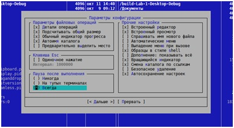
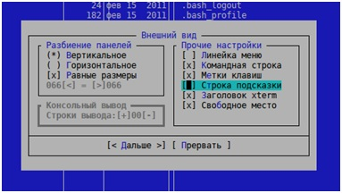
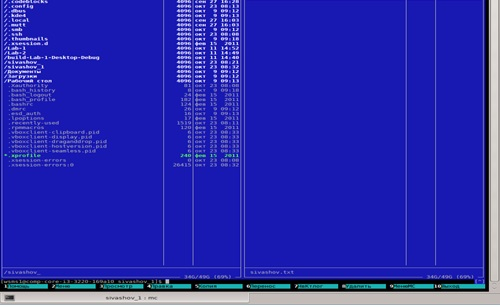
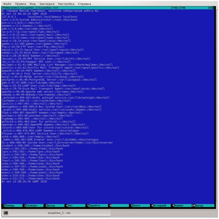

Задание 1.
Открытие и настройка MidnightCommander
1)Открываем терминал и вводим команду $ mc
В результате выполнения команды запустится файловый менеджер MidnightCommander.
2)Настраиваем конфигурацию MidnightCommander:

3)Настраиваем внешний вид MidnightCommander

4)Сохраняем настройки.
Задание 2.
Работа в MidnightCommander
1. Создаём в своем домашнем каталоге два каталога и .
2. Открыть окно встроенного редактора mc и ввести текст «Я, Курников Андрей Юрьевич, выполняю лабораторную работу №2.».
3. Сохранить файл с именем в каталог .
4. Добавить в созданный файл текущую дату и время командой date.
5. Скопировать созданный файл в каталог .
6. Найти в файловой системе файл с именем hosts.
7. Скопировать файл hosts в каталог .
8. Сделать копию файла hosts в файл hosts1, а файл hosts удалить.
9. Командой cat добавить содержимое файла hosts1 в файл .
10. Выполнить команду:
cat /etc/passwd>>
11. Выполнить команду:
date>>
12. Сделать скрин окна mc с отображением содержимого файла .
Скриншот окна Midnight Commander:

Скриншот файла «kurnikov.txt»:

На главную